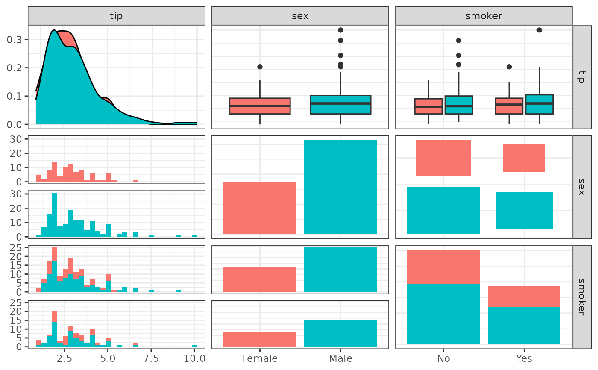
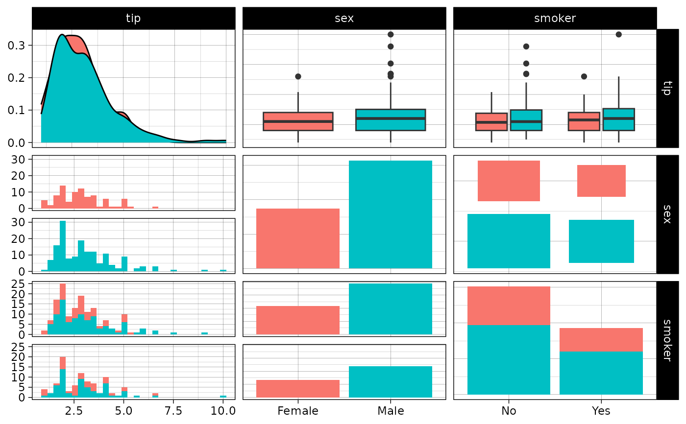
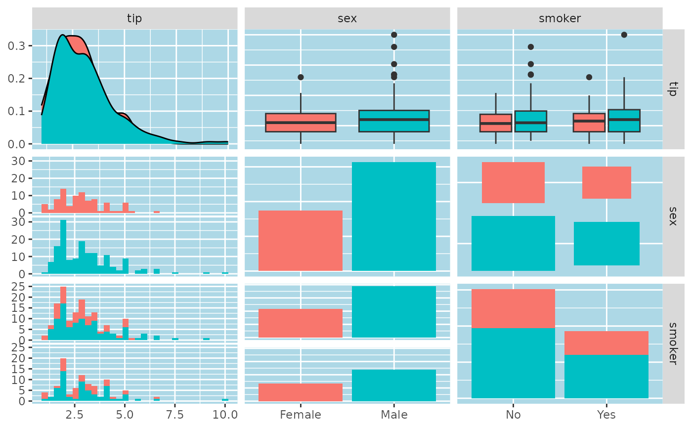
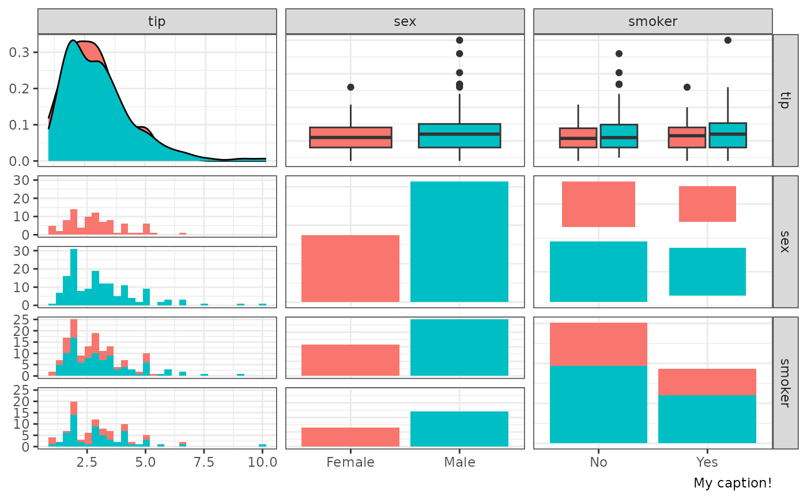
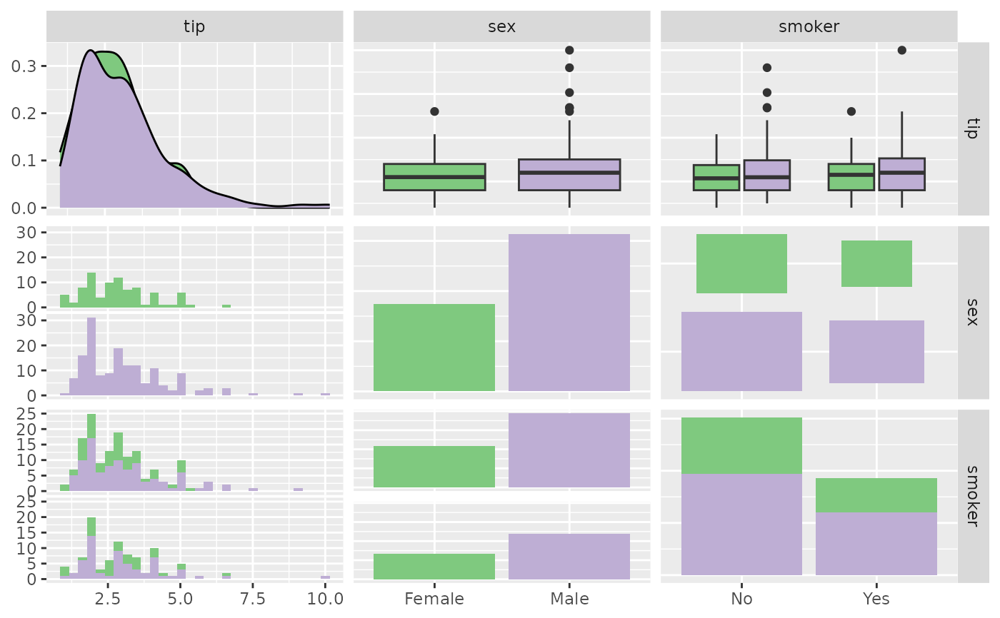
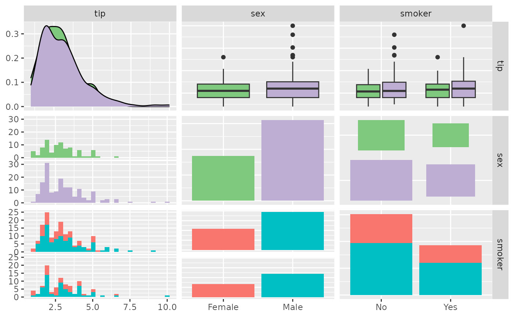
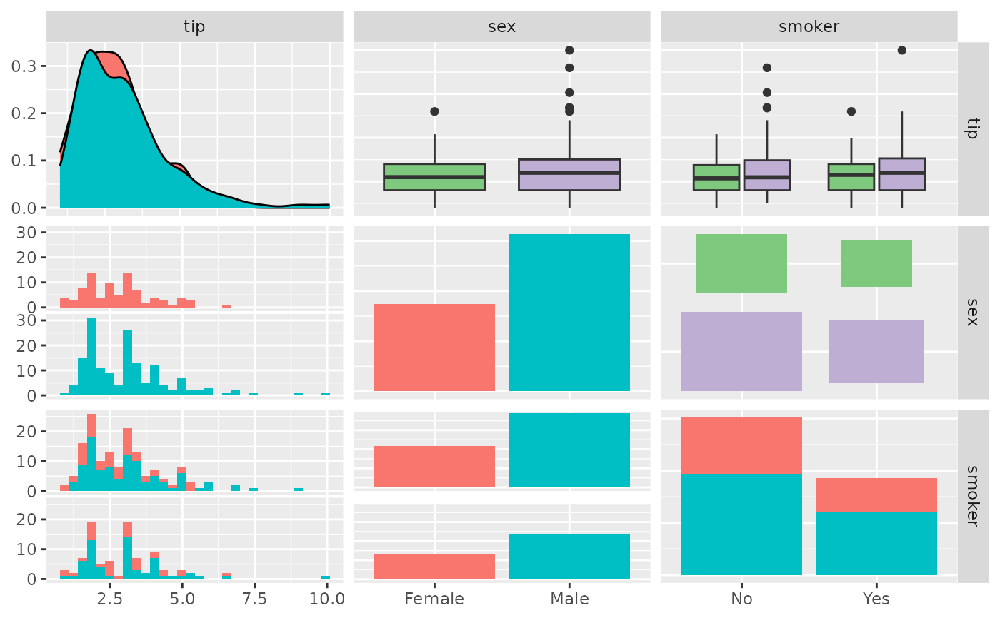
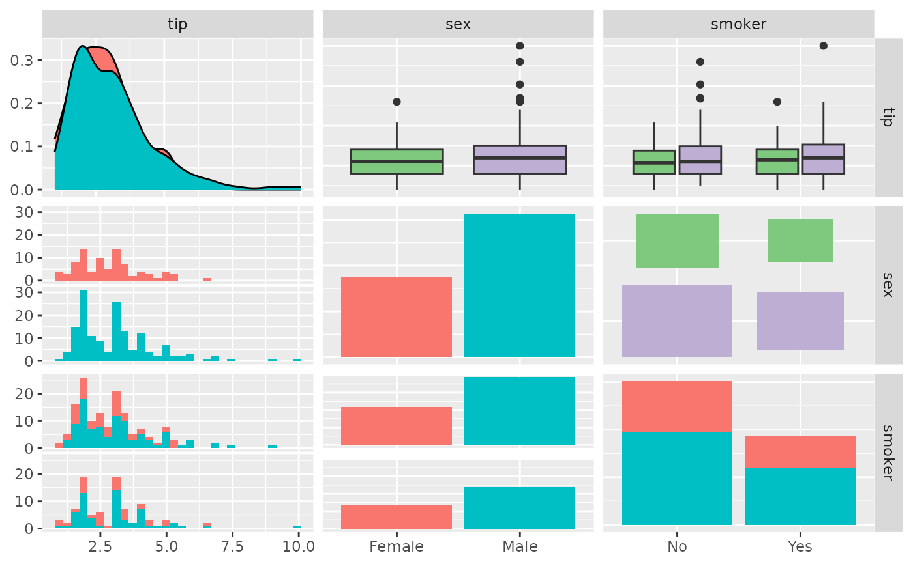

Modify a ggmatrix object by adding an ggplot2 object to all plots
Source: R/ggpairs_add.R
add_to_ggmatrix.RdThis operator allows you to add ggplot2 objects to a ggmatrix object.
Arguments
- e1
An object of class
ggnosticorggplot- e2
A component to add to
e1- location
"all",TRUEAll row and col combinations
"none"No row and column combinations
"upper"Locations where the column value is higher than the row value
"lower"Locations where the row value is higher than the column value
"diag"Locations where the column value is equal to the row value
matrixordata.framematrixvalues will be converted intodata.frames.A
data.framewith the exact column namesc("row", "col")A
data.framewith the number of rows and columns matching the plot matrix object provided. Each cell will be tested for a "truthy" value to determine if the location should be kept.
- rows
numeric vector of the rows to be used. Will be used with
colsiflocationisNULL- cols
numeric vector of the cols to be used. Will be used with
rowsiflocationisNULL
Details
If the first object is an object of class ggmatrix, you can add
the following types of objects, and it will return a modified ggplot2
object.
theme: update plot themescale: replace current scalecoord: override current coordinate system
The + operator completely replaces elements
with elements from e2.
add_to_ggmatrix gives you more control to modify
only some subplots. This function may be replaced and/or removed in the future. ![[Experimental]](figures/lifecycle-experimental.svg)
Examples
# small function to display plots only if it's interactive
p_ <- GGally::print_if_interactive
data(tips)
pm <- ggpairs(tips[, 2:4], ggplot2::aes(color = sex))
## change to black and white theme
pm + ggplot2::theme_bw()
#> `stat_bin()` using `bins = 30`. Pick better value with `binwidth`.
#> `stat_bin()` using `bins = 30`. Pick better value with `binwidth`.

## change to linedraw theme
p_(pm + ggplot2::theme_linedraw())
#> `stat_bin()` using `bins = 30`. Pick better value with `binwidth`.
#> `stat_bin()` using `bins = 30`. Pick better value with `binwidth`.

## change to custom theme
p_(pm + ggplot2::theme(panel.background = ggplot2::element_rect(fill = "lightblue")))
#> `stat_bin()` using `bins = 30`. Pick better value with `binwidth`.
#> `stat_bin()` using `bins = 30`. Pick better value with `binwidth`.

## add a list of information
extra <- list(ggplot2::theme_bw(), ggplot2::labs(caption = "My caption!"))
p_(pm + extra)
#> `stat_bin()` using `bins = 30`. Pick better value with `binwidth`.
#> `stat_bin()` using `bins = 30`. Pick better value with `binwidth`.

## modify scale
p_(pm + scale_fill_brewer(type = "qual"))
#> `stat_bin()` using `bins = 30`. Pick better value with `binwidth`.
#> `stat_bin()` using `bins = 30`. Pick better value with `binwidth`.

## only first row
p_(add_to_ggmatrix(pm, scale_fill_brewer(type = "qual"), rows = 1:2))
#> `stat_bin()` using `bins = 30`. Pick better value with `binwidth`.
#> `stat_bin()` using `bins = 30`. Pick better value with `binwidth`.

## only second col
p_(add_to_ggmatrix(pm, scale_fill_brewer(type = "qual"), cols = 2:3))
#> `stat_bin()` using `bins = 30`. Pick better value with `binwidth`.
#> `stat_bin()` using `bins = 30`. Pick better value with `binwidth`.
 ## only to upper triangle of plot matrix
p_(add_to_ggmatrix(
pm,
scale_fill_brewer(type = "qual"),
location = "upper"
))
#> `stat_bin()` using `bins = 30`. Pick better value with `binwidth`.
#> `stat_bin()` using `bins = 30`. Pick better value with `binwidth`.

## only to upper triangle of plot matrix
p_(add_to_ggmatrix(
pm,
scale_fill_brewer(type = "qual"),
location = "upper"
))
#> `stat_bin()` using `bins = 30`. Pick better value with `binwidth`.
#> `stat_bin()` using `bins = 30`. Pick better value with `binwidth`.
